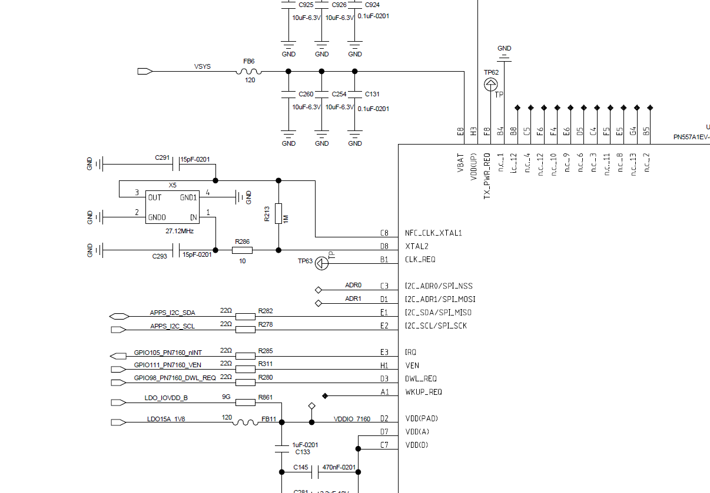

概要
at命令输入 dump功能失败
指令
at+qcfg=”dumpenable” 查询是否开启dump功能
at+qcfg=”dumpenable”,0 //0表示死机后直接开机
at+qcfg=”dumpenable”,1 //1表示死机后进入dump
log
输入命令后at+qcfg=”dumpenable”,QCOM工具提示, open file error

log 如下
04-10 17:33:45.729 1045 1489 I port-bridge: buf contains1 'at+qcfg="dumpenable"
04-10 17:33:45.729 1045 1489 I port-bridge: '
04-10 17:33:45.729 1045 1489 I port-bridge: Attempting to write to '/dev/at_mdm0'...
04-10 17:33:45.729 1045 1489 I port-bridge: trying to lock [0x0x6150058818] /dev/at_mdm0
04-10 17:33:45.729 1045 1489 I port-bridge: locked [0x0x6150058818] /dev/at_mdm0
04-10 17:33:45.731 1045 1489 E port-bridge: write to '/dev/at_mdm0' returned 22
04-10 17:33:45.731 1045 1489 I port-bridge: trying to unlock [0x0x6150058818] /dev/at_mdm0
04-10 17:33:45.731 1045 1489 I port-bridge: unlocked [0x0x6150058818] /dev/at_mdm0
04-10 17:33:45.731 1045 1489 I port-bridge: wifi_modem_is_ture:0, line:821==================
04-10 17:33:45.731 1045 1489 I port-bridge: Attempting to poll '/dev/at_usb0'...
04-10 17:33:45.732 1219 1375 I AT_Daemon_Quec: qmi_at_unsol_ind_cb: ind id:33
04-10 17:33:45.732 1219 1375 I AT_Daemon_Quec: Received AT command forward request from modem
04-10 17:33:45.732 1219 1375 I AT_Daemon_Quec: ctrCond signalling complete.
04-10 17:33:45.733 1219 1219 I AT_Daemon_Quec: Recieved ctrCond: p: 0, S:0, nr: 1
04-10 17:33:45.733 1219 1219 I AT_Daemon_Quec: pthread notified for new request; sending response.
04-10 17:33:45.733 1219 1219 I AT_Daemon_Quec: ATFWD AtCmdFwd cmd = +qcfg
04-10 17:33:45.733 1219 1219 I AT_Daemon_Quec: quec_qcfg_handle start
04-10 17:33:45.733 1219 1219 I AT_Daemon_Quec: quec_qcfg_handle:718 quec_qcfg_handle -1s
04-10 17:33:45.733 1219 1219 I AT_Daemon_Quec: quec_qcfg_handle cmd->tokens[0]=dumpenable
04-10 17:33:45.733 1219 1219 I AT_Daemon_Quec: at+qcfg=dumpenable start
04-10 17:33:45.733 1219 1219 E AT_Daemon_Quec: QUEC_NVDATA1 open failed
04-10 17:33:45.733 1219 1219 I AT_Daemon_Quec: Response processing complete. Sending response.
04-10 17:33:45.733 1219 1219 I AT_Daemon_Quec: sending QMI_AT_FWD_RESP_AT_CMD_REQ_ V01 message
04-10 17:33:45.734 1045 1488 E port-bridge: poll on '/dev/at_mdm0' returned 1
04-10 17:33:45.734 1045 1488 I port-bridge: POLLIN is set.
04-10 17:33:45.734 1045 1488 I port-bridge: Attempting to read from '/dev/at_mdm0'...
04-10 17:33:45.734 1045 1488 I port-bridge: trying to lock [0x0x6150058818] /dev/at_mdm0
04-10 17:33:45.735 1045 1488 I port-bridge: locked [0x0x6150058818] /dev/at_mdm0
04-10 17:33:45.735 1045 1488 I port-bridge: trying to unlock [0x0x6150058818] /dev/at_mdm0
04-10 17:33:45.735 1045 1488 I port-bridge: unlocked [0x0x6150058818] /dev/at_mdm0
04-10 17:33:45.735 1219 1219 I AT_Daemon_Quec: qmi_client_send_msg_sync returned: 0
分析
at命令输入,跟port-bridge 强相关,路径UM.9.15/vendor/qcom/proprietary/data/port-bridge/
UM.9.15/vendor/qcom/proprietary/telephony-apps/ATFWD-daemon_quectel/quectel_at_handle.cpp
#define QUEC_NVDATA1 "/dev/block/by-name/nvdata1"
fp = fopen(QUEC_NVDATA1, "r");
LOGE("QUEC_NVDATA1 open failed\n");
机器查询分区权限
可以看到只有root有读写权限,所以估计是权限不对

查找哪里配置的nvdata1或者mmcblk0p78
所以问题比较明显,改出来的

修改方法
改回nvdata1,nvdata2 改回666
UM.9.15/device/qcom/common/rootdir/Android.mk
注意ueventd.qcom.rc 是编译到系统的/vendor/ueventd.rc,所以push认证
include $(CLEAR_VARS)
LOCAL_MODULE := ueventd.qcom.rc
LOCAL_MODULE_STEM := ueventd.rc
LOCAL_MODULE_TAGS := optional
LOCAL_MODULE_CLASS := ETC
LOCAL_SRC_FILES := etc/ueventd.qcom.rc
LOCAL_MODULE_PATH := $(TARGET_OUT_VENDOR)
include $(BUILD_PREBUILT)
ueventd.rc 加载流程
ueventd 去加载 ueventd.rc ,然后配置各个文件得权限,具体流程有时间再分析
QSSI.12/system/core/rootdir/init.rc
on early-init
start ueventd
QSSI.12/system/core/init/ueventd.cpp
int ueventd_main(int argc, char** argv) {
/*
* init sets the umask to 077 for forked processes. We need to
* create files with exact permissions, without modification by
* the umask.
*/
umask(000);
android::base::InitLogging(argv, &android::base::KernelLogger);
LOG(INFO) << "ueventd started!";
SelinuxSetupKernelLogging();
SelabelInitialize();
std::vector<std::unique_ptr<UeventHandler>> uevent_handlers;
auto ueventd_configuration = GetConfiguration();
uevent_handlers.emplace_back(std::make_unique<DeviceHandler>(
std::move(ueventd_configuration.dev_permissions),
std::move(ueventd_configuration.sysfs_permissions),
std::move(ueventd_configuration.subsystems), android::fs_mgr::GetBootDevices(), true));
uevent_handlers.emplace_back(std::make_unique<FirmwareHandler>(
std::move(ueventd_configuration.firmware_directories),
std::move(ueventd_configuration.external_firmware_handlers)));
if (ueventd_configuration.enable_modalias_handling) {
std::vector<std::string> base_paths = {"/odm/lib/modules", "/vendor/lib/modules"};
uevent_handlers.emplace_back(std::make_unique<ModaliasHandler>(base_paths));
}
static UeventdConfiguration GetConfiguration() {
// TODO: Remove these legacy paths once Android S is no longer supported.
if (android::base::GetIntProperty("ro.product.first_api_level", 10000) <= __ANDROID_API_S__) {
auto hardware = android::base::GetProperty("ro.hardware", "");
return ParseConfig({"/system/etc/ueventd.rc", "/vendor/ueventd.rc", "/odm/ueventd.rc",
"/ueventd." + hardware + ".rc"});
}
return ParseConfig({"/system/etc/ueventd.rc"});
}